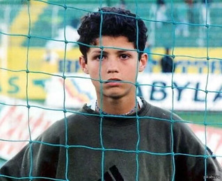
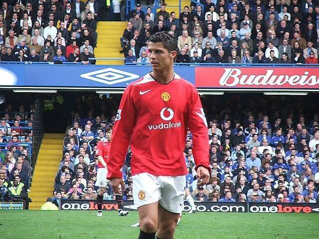

Cristiano Ronaldo dos Santos Aveiro is one of the all time greats of football. Born in February 5, 1985, Madeira, Portugal, where Ronaldo began his passion for football at a very young age. By age 12, Ronaldo moved to Lisbon to join Sporting PC, one of Portugal's top clubs!
At age 18 years-old, Cristiano signed with Manchester United in 2003.
Ronaldo quickly rose to become a world-class player by winning three premier league
titles and his first Ballon d'Or in 2008.
(Ballon d'Or is the biggest award
a football player can receive as it is given to the best player of the year).
In 2009 Cristiano Ronaldo transfered to Real Madrid , where he became the club's all-time top scorer alongside winning four Champions League titles and four more Ballon d'Ors. In Real Madrid, Ronaldo became the top scorer of all time with 450 goals in Real Madrid alone and is currently racing for 1000 total goals scored.
 